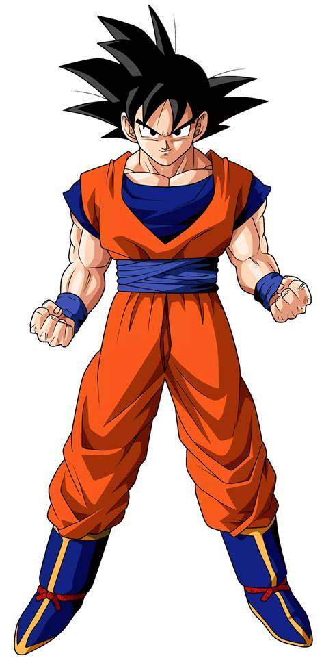

Goku is a fictional character and main protagonist of the Dragon Ball manga series created by Akira Toriyama. He is based on Sun Wukong known as Son Goku Goku is an eccentric, monkey-tailed boy who practices martial arts and possesses superhuman strength.
